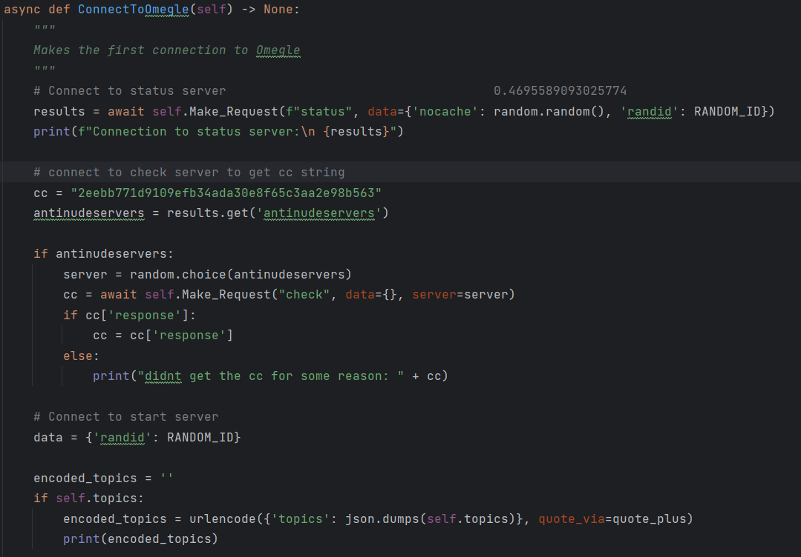
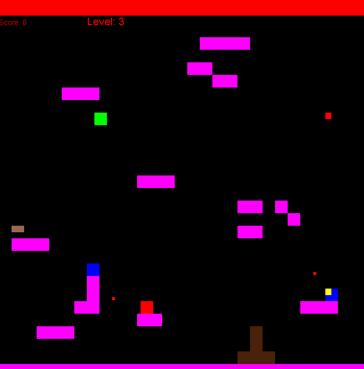
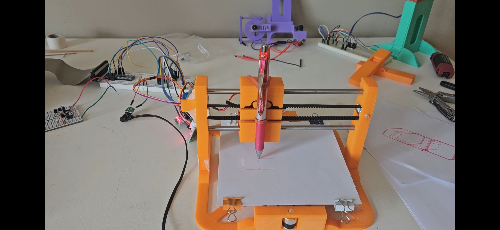
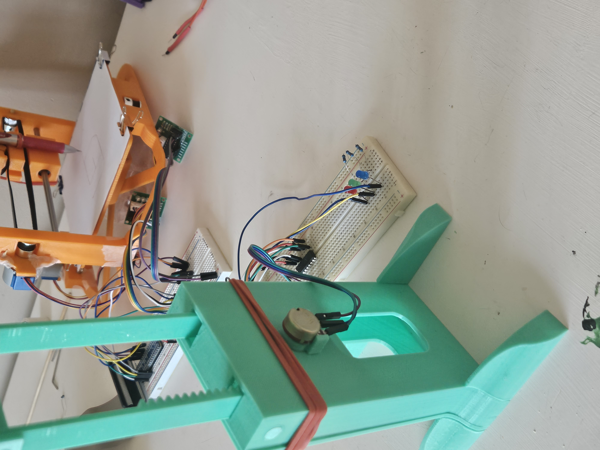

My Projects
Here are some of the projects I've worked on during my studies and personal time.

Web client
A client that could connect to the website www.omegle.com and allow for headless web chatting through python code. Omegle has since been shut down this project is no longer operational.

Arcade game
A jetpack man arcade style game made in java in a team with two other students

2D printer
A python program that takes in an image and converts it to g-code to draw out the image on paper using a 3D printer like design with two stepper motors through a raspberry pi.

Digital scale
A python program that reads resistance values from a potentiometer connected to a gear in a spring scale and calculates the weight of the object on the scale based on the strength of the springs.